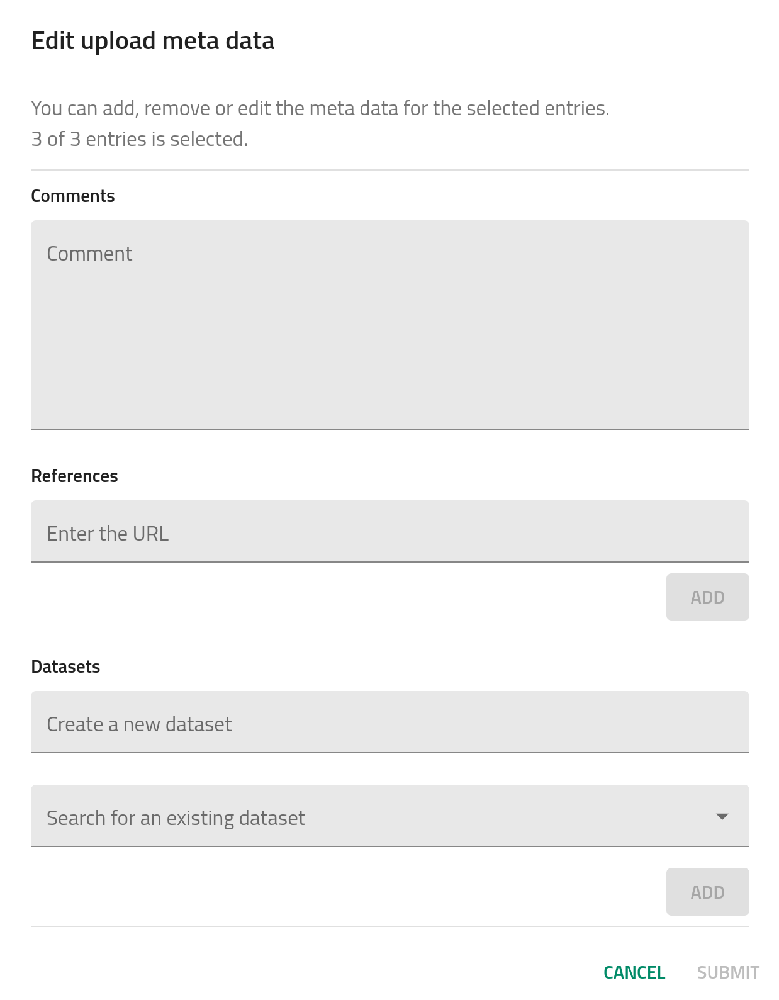

How-to upload data
Uploading data in NOMAD can be done in several ways:
- By dragging-and-dropping your files into the
PUBLISH > Uploadspage: suitable for users who have a relatively small amount of data or who want to test how the processing works. - By using the Python-based NOMAD API: suitable for users who have larger datasets and need to automatize the upload.
- By using the shell command
curlfor sending files to the upload: suitable for users who have larger datasets and need to automatize the upload.
You can upload the files one by one or you can zip them in .zip or .tar.gz formats to upload a larger amount of files at once.
We suggest you to visit and read the References > Best Practices: preparing the data and folder structure page to see what are the best practices to organize data in a directory tree prior to upload it.
Drag-and-drop uploads¶
On the top-left menu, click on PUBLISH > Uploads.
You can then click on CREATE A NEW UPLOAD or try one of the example uploads by clicking in ADD EXAMPLE UPLOADS and selecting one of the multiple options. In our case, we use a zip file with some computational data.
You can drag-and-drop your files or click on the CLICK OR DROP FILES button to browse through your local directories.
After the files are uploaded, a processing is triggered. Visit Explanation - how the processing works to gain further insight into the process.
You will receive an email when the upload processing is finished.
NOMAD API uploads¶
Warning
Under construction.
Command-line uploads¶
Warning
Under construction.
Sections of the Uploads page¶
At the top of the uploads page, you can modify certain general metadata fields.
The name of the upload can be modify by clicking on the pen icon . The other icons correspond to:
- Manage members: allows users to invite collaborators by defining co-authors and reviewers roles.
- Download files: downloads all files present in the upload.
- Reload: reloads the uploads page.
- Reprocess: triggers again the processing of the uploaded data.
- API: generates a JSON response to use by the NOMAD API. See Filtering and Querying for more information.
- Delete the upload: deletes completely the upload.
The remainder of the uploads page is divided in 4 sections.
Prepare and upload your files¶
This section shows the files and folder structure in the upload. You can add a README.md in the root directory and its content will be shown above this section..
Process data¶
This section shows the processed data and the generated entries in NOMAD.
Edit author metadata¶
This section allows users to edit certain metadata fields from all entries recognized in the upload. This includes comments, where you can add as much extra information as you want, references, where you can add a URL to your upload (e.g., an article DOI), and datasets, where you can create or add the uploaded data into a more general dataset (see How-to publish data > Organizing data in datasets).

Publish¶
This section lets the user to publish the data with or without an embargo. This will be explained more in detail in How-to publish data.